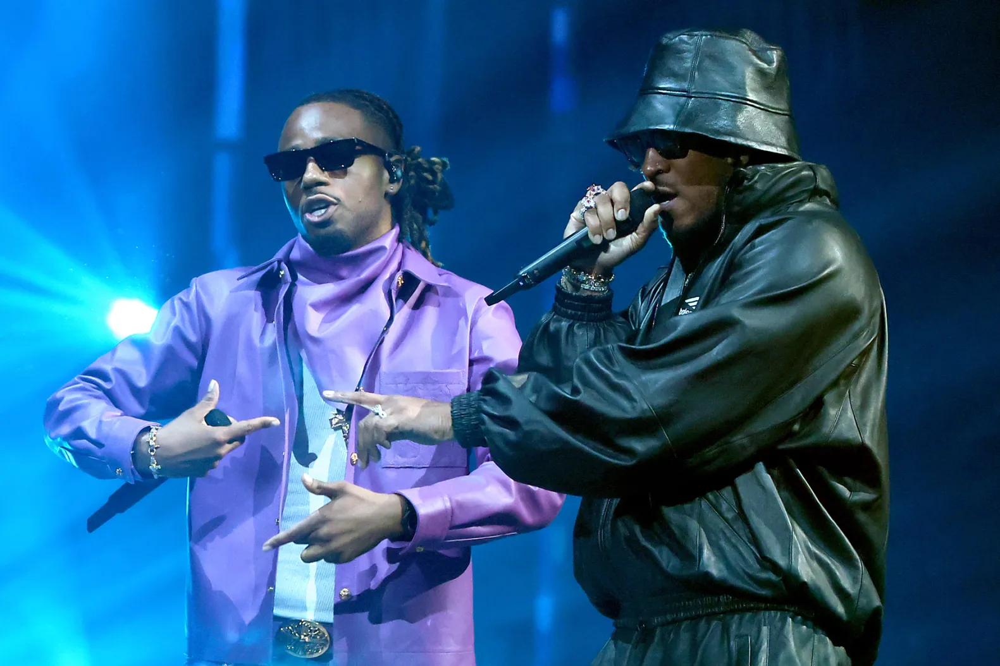
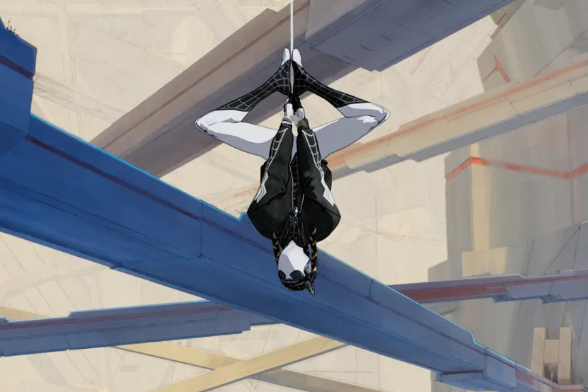
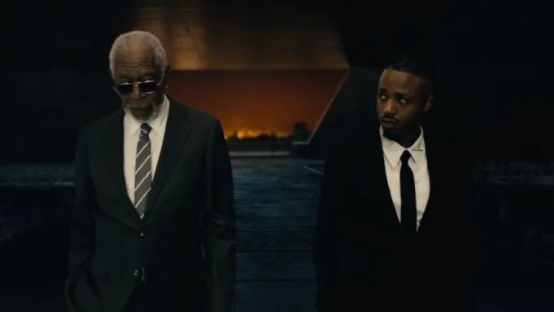

Metro Boomin.
intro
recent
timeline
impact
quotes
metro boomin
leland tyler wayne

Metro Boomin and Future Join Rolling Loud Lineup, Announce Album

Metro Boomin gets a collaboration with Spider-Man Across the Spider-Verse movie

Metro Boomin Metro Boomin Previews Heroes & Villains With Fiery Short Film